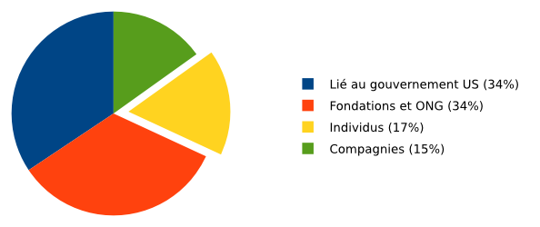

Aujourd'hui nous démarrons notre campagne de dons pour financer notre travail en 2017.
À la différence de la plupart des autres outils sur Internet, Tails est distribué librement et gratuitement. Nous ne vendons pas vos données, nous ne vous envoyons pas des publicités ciblées et nous ne vendrons jamais notre projet à une grande entreprise. Nous distribuons Tails gratuitement simplement car tout le monde mérite d'être protégé contre la surveillance et la censure. Mais également car être un logiciel libre est une condition nécessaire pour que nos outils soient sûrs et vous protègent comme prévu. Si notre code source était fermé, il n'y aurait aucun moyen de vérifier que notre logiciel est digne de confiance.
Depuis 2014, nous avons récolté 210 000€ en moyenne chaque année, venant de :
- Personnes comme vous
- Compagnies privées comme Mozilla ou DuckDuckGo
- Fondations et ONG comme Hivos et Access Now
- Entités liées au gouvernement des États-Unis comme le Open Technology Fund (OTF) ou le National Democratic Institute (NDI)

Nous entendons souvent des plaintes à propos du fait que beaucoup de projets de logiciels qui sont supposés combattre la surveillance, comme Tor et Tails, ont une grande partie de leur financement provenant du gouvernement des États-Unis, dont les projets de surveillance sont sévèrement critiqués. Nous partageons complètement cette inquiétude et nous serons préoccupés par notre comptabilité et notre pérennité aussi longtemps que la survie de nos projets dépend de quelques petites subventions, dont un certain nombre provient d'organisations liées à des gouvernements.
Maintenant, nous aimerions que vous réfléchissiez à cette question : d'où pourraient venir nos financements ?
La réponse est claire pour nous : la survie de Tails devrait être garantie directement par les personnes qui l'utilisent, et ainsi en retour, nous pourrions continuer à utiliser notre argent dans leur meilleur intérêt, avec une complète indépendance.
À partir de statistiques anonymisées sur notre site web nous savons que Tails est utilisé par environ 18 000 personnes chaque jour. Si chacune donnait 12€, le prix d'une clé USB, notre budget pour l'année entière serait récolté en un jour. Comme vous pouvez le voir, financer Tails avec des dons est réaliste et notre budget est ridiculement petit comparé aux entreprises multimilliardaires et aux agences de renseignement faisant fonctionner le marché de la surveillance.
Mais de nombreuses personnes utilisant Tails peuvent être en danger si elles donnent à un outil anti-surveillance comme Tails. Donc en donnant à Tails vous aidez également ces personnes en permettant à Tails de continuer de vivre. S'il vous plaît envisagez de faire un don annuel ou mensuel.
Si vous voulez que Tails reste indépendant, merci de prendre une minute pour faire un don.